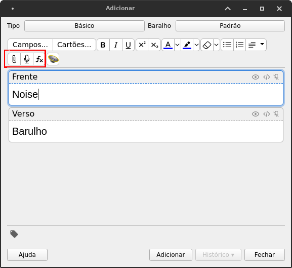
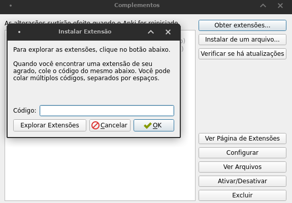
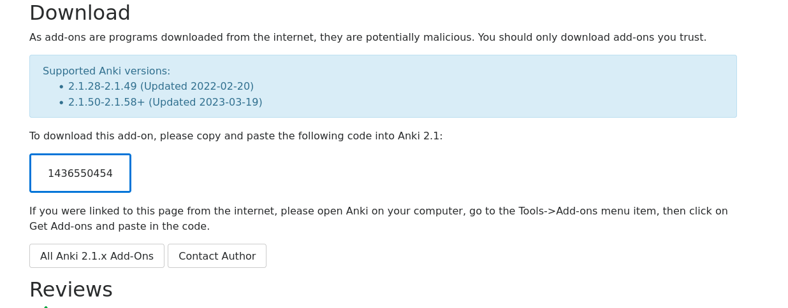
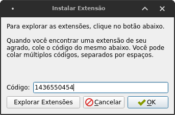

Anki: plugins e AwesomeTTS
Já sabendo como adicionar cartas, você ter o interesse de adicionar som a elas. Claro, isso não é exatamente necessário, mas é um auxílio a mais, principalmente se você estiver estudando uma língua que não tenha uma correspondência entre letra e som tão próxima como o português. Em inglês, por exemplo, as palavras “streak”, “break” e “steak”13 não têm uma sonoridade previsível apesar de serem parecidas na grafia. Assim, ter um auxílio de pronúncia pode vir a calhar.
Adicionar som ao Anki pode ser feito de duas formas:
Você pode simplesmente adicionar uma gravação da sua voz (ou da voz de outra pessoa) utilizando as funções de “anexar arquivo” ou de “gravar áudio”: 
Mais convenientemente, você pode usar plugin que emprega serviços como o Google Tradutor para ler em voz alta a palavra (ou frase) desejada. Aqui nós aprenderemos a fazer isso.
Instalando plugins
O processo de instalação de plugins no Anki é simples. Basta seguir a direção exposta na imagem a seguir:
Você será recebido com um menu ao lado de um campo branco. Ao clicar em Obter extensões, o programa pedirá de você um código. Se você não sabe qual código inserir, clique em Explorar Extensões. Você será levado para um site onde você poderá pesquisar pelos plugins que você deseja.

Você será recebido pela seguinte página:
Há duas opções de plugins de inserção de áudio nesta tela: HyperTTS e AwesomeTTS. Ambos foram feitos pelo mesmo desenvolvedor, e o HyperTTS é a alternativa mais atualizada. Contudo, embora gratuito, ele exige que o usuário se registre, então em prol da simplicidade e rapidez nós vamos abordar o AwesomeTTS aqui.
Clicando no nome do plugin (“AwesomeTTS”) nesta tela, você será levado para a página da extensão. Há várias imagens, descrições, comentários e tudo mais, mas o que você quer é o código numérico na seção “Download”, logo antes das “Reviews”:

Para facilitar as coisas, o código é este: 1436550454. Você precisa copiar esse código e inseri-lo no campo que aparece logo após clicarmos em Obter extensões.

Depois disso, basta clicar em OK que o download da extensão será feita. Feito isso, feche o Anki, abra-o de novo e a extensão estará instalada.
Agora veremos como usá-la.
Elas soam, respectivamente, como “/strik/”, “/brêik/” e “/stêik/”↩︎